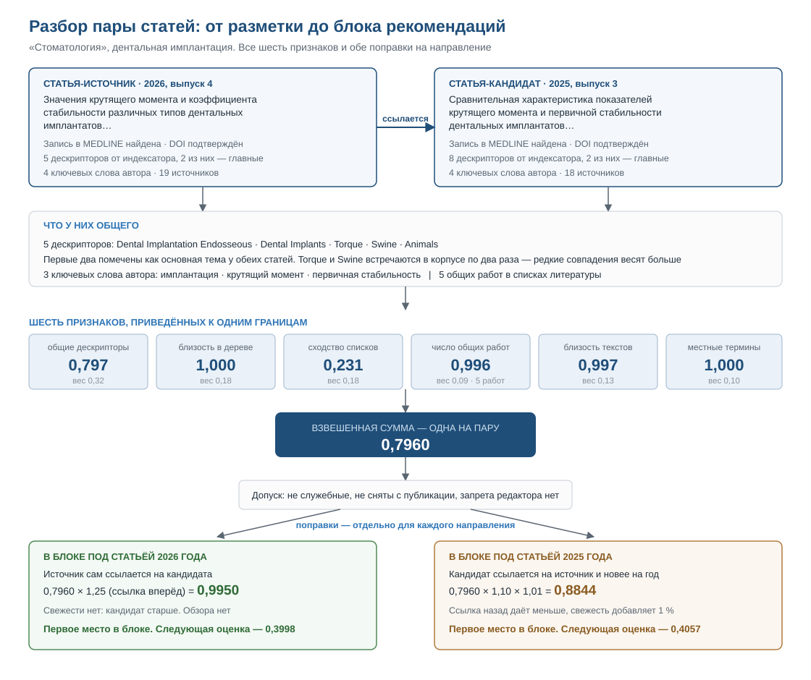

Читатель дочитал статью. Что ему открыть дальше?
Система подбирает к каждой статье архива от двух до десяти работ, которые продолжают тему. Основание — общие понятия медицинского словаря, общие источники и прямые ссылки, а не совпадение слов. Под каждой рекомендацией видно, из чего сложилась её оценка.
Что получилось наЧто получилось на шести журналах
nbsp;пилотных журналах
Подбор для читателя занимает ноль миллисекунд: списки готовятся заранее и хранятся в базе. Статьи без блока — те, у которых не нашлось хотя бы двух подтверждённых связей. Пустой блок здесь честнее, чем блок из случайных статей.
По журналам
Для журналов вне MEDLINE профессиональной разметки нет. Её заменили ключевые слова авторов, понятия, которые языковая модель вынула из текста с проверяемой цитатой, и решения редактора по терминам.
| Журнал | MEDLINE | Статей | С блоком | Рекомендаций |
|---|---|---|---|---|
| Стоматология | да | 151 | 130 | 901 |
| Вестник оториноларингологии | да | 180 | 164 | 1 316 |
| Профилактическая медицина | нет | 361 | 335 | 2 591 |
| Non nocere. Новый терапевтический журнал | нет | 256 | 84 | 373 |
| Российская ринология | нет | 83 | 60 | 371 |
| Российская стоматология | нет | 71 | 51 | 342 |
Почему у статьи нет блока, редактор видит в списке статей: у 224 из 278 таких статей меньше двух подтверждённых пар, 46 — служебные материалы, у 8 нет разметки.
Почему «похожие статьи» по словам не работают в медицине
Приходит на одну статью и уходит с неё же
Он пришёл из поиска. В архиве лежат сотни работ, продолжающих тему, но поиск по сайту требует знать, что искать.
Не может сравнить каждую статью с каждой
Число пар растёт быстрее архива: ручной подбор не масштабируется уже на нескольких журналах, а на всём архиве издательства тем более.
Связывают «обе статьи про детей»
Подбор по совпадению слов и по сходству текста находит общие слова, а не общий предмет. Объяснить такую связь редактору нечем.
Одна рекомендация от начала до конца
«Стоматология», 2026, вып. 4: статья о крутящем моменте дентальных имплантатов в зависимости от дизайна фрез. Первое место в её блоке заняла статья 2025 года о первичной стабильности имплантатов в кости низкой плотности.
- 5 общих дескрипторов MeSH, два — основная тема у обеих
- 3 общих ключевых слова авторов
- 5 общих работ в списках литературы
- статья 2026 года прямо ссылается на статью 2025 года
0,796 — оценка пары по шести признакам.
0,995 — после поправки ×1,25 за прямую ссылку автора.
0,433 — оценка второго места. Разрыв больше чем вдвое.
Читатель видит под рекомендацией не «похоже на 87 %», а основание:
Четыре правила, которые отличают систему
Сходство текста не пропускает пару
Сходство текста у любых двух статей не ниже 0,5. Поэтому пара идёт к читателю, только если её подтверждает след решения человека: общая основная тема от индексатора, прямая ссылка, общие источники или общее ключевое слово автора.
Модель обязана привести цитату
Каждое понятие, которое модель нашла в тексте, сопровождается цитатой. Система ищет её в статье дословно, а короткая цитата должна ещё и называть термин. Не прошла — понятие отклонено, отклонение видно редактору.
Оценка раскладывается на слагаемые
Шесть признаков, шесть весов из файла настроек, перечень поправок. Сумма вкладов на странице разбора всегда сходится с итогом.
Решение редактора переживает пересчёт
Запрет пары, исключение служебной статьи, решение по термину хранятся отдельно от расчёта и действуют при каждом следующем запуске.
Чего система не делает и что ещё не готово
Не делает намеренно
- Не следит за читателем: рекомендации зависят только от открытой статьи.
- Не передаёт тексты наружу: модель работает на сервере редакции.
- Не ставит дескриптор сам, даже при единственном варианте: ошибка разошлась бы по всем статьям с этим термином.
- Не показывает статьи других издательств.
Ещё не готово
- Блок рекомендаций пока живёт в базе и в обозревателе редактора, на сайт не выведен.
- Качество выдачи не измерено на читателях: строгая политика показа выбрана по умолчанию, эксперимент впереди.
Как система подбирает рекомендации
Расчёт идёт заранее, а не во время визита читателя. Система проходит архив, описывает каждую статью понятиями, сравнивает каждую с каждой по шести признакам и сохраняет готовые списки. Ниже — каждый шаг с порогами и числами.
Четыре внешних источника, один конвейер
Название, аннотация, текст, ключевые слова, список литературы.
Проверяет, что DOI статьи и источников действительно зарегистрирован.
Готовая разметка, сделанная индексаторами Национальной библиотеки медицины США.
Словарь понятий с деревом и русские названия его записей.
Все ответы служб сохраняются. Поэтому расчёт можно повторить без сети и получить тот же результат. Каждый шаг конвейера — отдельный модуль: его можно заменить, не трогая соседей.
Разобрать страницу статьи
Система обходит сайт и вынимает из страницы название, аннотацию, полный текст, ключевые слова авторов и список литературы. DOI статьи и каждого источника сверяется с Crossref.
Описать статью понятиями
Разметка — единственное, по чему система судит о содержании. Источников три, в порядке надёжности:
- Дескрипторы MeSH из PubMed — если журнал входит в MEDLINE. Разметку сделал индексатор.
- Ключевые слова авторов — для журналов вне MEDLINE это единственная разметка, сделанная человеком.
- Понятия от языковой модели
qwen2.5:7b— до восьми на статью: состояния, вмешательства, методы, группы пациентов, исходы.
Проверить каждое понятие модели цитатой
Вместе с понятием модель возвращает цитату и уверенность. Цитата ищется в тексте дословно. Нет совпадения — понятие не идёт в расчёт, но остаётся видимым редактору. Короткая цитата, до 20 знаков, должна называть сам термин: сокращение «АР» есть в тексте, но не доказывает «аллергический ринит». По этому правилу в расчёте 2 октября отклонено 269 понятий. Понятие с низкой уверенностью тоже не размечает статью: оно ждёт решения человека, а расчёт тем временем идёт по надёжной части разметки.
Связать русский термин со словарём
В MeSH нет русских названий. Система берёт их из Wikidata, а если словарь молчит, переводит термин и ищет дескриптор по названию. Вариант уходит редактору в очередь терминов вместе с отрывками статей, где термин встретился. Решение редактора применяется сразу ко всем статьям с этим термином.
Измерить пару по шести признакам
Каждая пара статей получает шесть чисел. Веса заданы в файле настроек, в коде их нет.
- Редкое понятие весит больше частого: общий дескриптор Torque (2 статьи в архиве) сближает сильнее, чем Animals (9 статей).
- Дерево работает, когда прямого совпадения нет: «кариес» и «пульпит» близки, если между ними не больше двух шагов.
- Семантическая близость получила малый вес намеренно: она выше нуля у любой пары.
Привести к общей шкале и сложить
Четыре признака уже лежат от нуля до единицы. Два других переводятся в место в общем ряду пар: пять общих источников выше 99,6 % всех пар архива, поэтому в формулу идёт 0,996, а не 5. Ряд строится один раз и получает номер редакции, чтобы новые статьи не сдвигали оценки старых пар.
Оценка — не процент и не вероятность. 0,45 значит «пара сильнее большинства прочих в архиве».
Применить поправки и проверить подтверждённость
Сумма одинакова для «А→Б» и «Б→А». Поправки делают её направленной: полезность для читателя несимметрична.
| Поправка | Множитель | Почему |
|---|---|---|
| Статья ссылается на кандидата | ×1,25 | Автор сам назвал эту работу нужной |
| Кандидат ссылается на статью | ×1,10 | Связь есть, но установил её не автор читаемой статьи |
| Кандидат — обзор | ×1,15 | Обзор полезнее для входа в тему |
| Кандидат новее | +1 % за год, ≤ 10 % | При прочих равных свежая работа лучше |
Затем пара проходит проверку: нужна хотя бы одна из четырёх опор — общая основная тема, прямая ссылка, списки литературы со сходством выше 0,8, общие ключевые слова авторов со сходством выше 0,15. Без опоры пара уходит в раздел «Отброшенное» с причиной «Связь только по тексту»: в расчёте 2 октября таких пар 84 164.
Отобрать список и показать редактору
| Правило показа | Значение |
|---|---|
| Наибольшая длина списка | 10 |
| Наименьшая длина, при которой блок показывается | 2 |
| Порог оценки | 0,1 |
| Неподтверждённые пары | не показываются |
| Статей из одного выпуска подряд | не больше 2 |
| Статья другого журнала в первой шестёрке | обязательна, если есть |
Служебные материалы («Новости», «Письмо редактора»), снятые и отозванные статьи из подбора исключаются в обе стороны. Редактор видит каждую рекомендацию с разбором оценки и может запретить пару с указанием причины.
Расчёт одной пары по шагам
Пара выбрана потому, что на ней работают все шесть признаков и обе поправки на направление. Оба журнала входят в MEDLINE, поэтому модель здесь не участвует.
| Признак | Что нашлось | В расчёт | Вес | Вклад |
|---|---|---|---|---|
| Общие дескрипторы | 5 общих из 5 и 8 | 0,797 | 0,32 | 0,2550 |
| Близость в дереве | соседние ветви | 1,000 | 0,18 | 0,1800 |
| Сходство списков литературы | 5 общих на 19 и 18 | 0,231 | 0,18 | 0,0416 |
| Число общих работ | 5 работ | 0,996 | 0,09 | 0,0897 |
| Семантическая близость | исходно 0,952 | 0,997 | 0,13 | 0,1297 |
| Местные термины | 3 общих ключевых слова | 1,000 | 0,10 | 0,1000 |
| Оценка пары, одна на оба направления | 0,7960 | |||
0,7960 × 1,25 = 0,9950
ссылка автора
кандидат старше — без поправки на свежесть0,7960 × 1,10 × 1,01 = 0,8844
обратная ссылка
кандидат новее на годПодтверждённость: сработали три опоры из четырёх, хватило бы одной. В блоке статьи 2026 года кандидат на первом месте, второе место — 0,4325. В обратном направлении в объяснении нет строки «статья ссылается на этот материал»: это было бы неправдой.

Кому нужен тот же механизм
Рекомендации для журнала — частный случай общей задачи: найти в большом закрытом массиве документы, связанные по существу, и доказать связь специалисту. Подход переносится, если у вас есть три вещи.
Массив текстов
Сотни или тысячи документов, которые читают по одному и не видят связей между ними.
Отраслевой справочник
МКБ, МПК, ОКПД2, справочник компетенций, внутренний классификатор. Он заменяет MeSH и даёт дерево близости.
Эксперт, которому нужно обоснование
Человек, который не примет «так решила нейросеть» и должен иметь возможность запретить ошибочную связь.
Где подход применим почти как есть
| Кто | Документы | Справочник | Что получает |
|---|---|---|---|
| Медицинские и научные издательства | Статьи журналов, главы книг | MeSH, ГРНТИ | Блок «читать дальше» с основанием связи |
| Методисты, клинические фармакологи | Клинические рекомендации, протоколы, инструкции | MeSH, МКБ, АТХ | Связанные протоколы с объяснением |
| Патентоведы | Заявки и патенты | МПК, CPC | Группу аналогов и понятия, через которые они близки |
| Юристы | Судебные решения, нормы, разъяснения | Статьи кодексов, правовой классификатор | Дела, опирающиеся на те же нормы |
| Службы качества | Регламенты, стандарты, инструкции | Классификатор стандартов, справочник процессов | Какие документы затронет изменение одного |
| Закупщики | Технические задания, лоты | ОКПД2, КТРУ | Похожие закупки и типовые формулировки |
| Научные фонды | Заявки на гранты, отчёты | ГРНТИ, классификатор фонда | Рецензентов из соседних тем и возможные дубли |
С заменой одной части
Техническая поддержка
Обращение связывается с базой знаний и прошлыми решениями через каталог услуг. Меняется только сбор документов.
Кадры и обучение
Вакансия, резюме и курс сопоставляются через справочник компетенций. Объяснение звучит как «совпадают навыки X и Y».
Музеи, архивы, библиотеки
Единицы хранения связываются через отраслевой тезаурус вместо медицинского словаря.
Пять частей, каждую можно взять отдельно
| Часть | У нас | В другой отрасли |
|---|---|---|
| Сбор и разбор | Обход сайта издательства, текст и литература | Регламенты, патенты, решения судов, обращения |
| Разметка по словарю | MeSH с деревом понятий | Любой иерархический классификатор |
| Извлечение с цитатой | Понятия из статей вне MEDLINE | Обязательства из договоров, требования из ТЗ, дефекты из актов |
| Оценка с объяснением | 6 признаков, веса в настройках, поправки | Ранжированный список, где видно, из чего сложилось каждое место |
| Рабочее место эксперта | Обозреватель: разбор пары, запрет, очередь терминов, граф окрестности | То же поверх ваших документов |
Как проверить подход на своих документах
Выборка
200–500 документов и справочник, по которому их принято размечать.
Расчёт
Разметка, сравнение всех пар, списки связей с разбором оценки.
Проверка экспертом
Ваш специалист смотрит связи в обозревателе и отмечает ошибочные. Доля ошибочных — главный результат пилота.
Доступ к стенду выдаётся по запросу, учётные данные на сайте не публикуются.